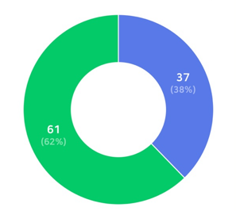
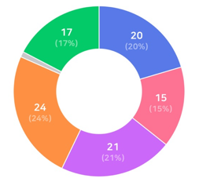
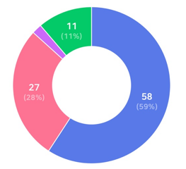
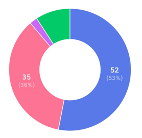
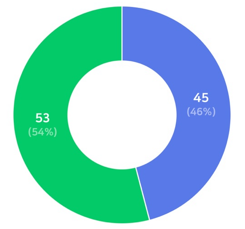
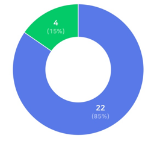

인터뷰
- 다문화 가정으로 살아가면서 삶에 불편한 부분이 있었나요?
- 다문화 가정으로 살아가면서 딱히 불편한 부분은 없었던 것 같습니다. 어머니가 외국 인이라 초등학교와 중학교를 다니면서 선생님들이 수업하실 때 사용하는 단어들의 의 미를 가끔 이해하기 어려웠던 부분들이 있었습니다.
- 교육적인 부분에서 불편한 부분은 없었나요? 있었다면 구체적으로 설명해 주세요
- 학교에서 별도로 다문화 가정을 위한 지원 프로그램이 없었고, 저희 가족은 스스로 해결하며 적응했습니다.
- 우리나라에서 거주하면서 교육적으로 지원받은 부분이 있나요?
- 저희 가족은 처음부터 한국에 정착하였고, 다른 나라로 이주하거나 거주할 필요성을 느끼지 않았습니다.
- 어떤 부분을 지원받으면 좋을 것 같나요?
- 제가 다녔던 학교에는 다문화 가정을 위한 특별 프로그램이 없었으며, 주변 친구들 중에도 다문화 가정 학생이 많지 않았습니다.
- 일반 고등학교에 다문화 가정을 위한 교내 프로그램이 있었나요?
- 어린 시절 한국어가 익숙하지 않았기 때문에 학교 내 도움 방을 통해 언어를 배우고 적응할 수 있었습니다. 비용은 따로 들지 않았으며, 학교의 지원 프로그램으로 운영되었습니다.
- 한 학교에 보통 다문화 가정이 많았나요?
- 학교나 지역 사회에서 저를 다문화 가정의 구성원으로 특별히 차별하거나 불편하게 대하는 경우가 없었습니다. 주위 사람들도 저를 있는 그대로 받아들여 주었습니다.

다문화 가정 자녀와 직접적으로 접척한 경험이 있나요?
네
61 (62%)
아니요
37 (38%)

다문화 가정 자녀와 교육 문제 해결을 위해 어떤 지원이 가장 필요하다고 생각하십니까?
멘토링 프로그램
24 (24%)
특별학습지원
21 (21%)

다문화 가정 자녀를 돕기 위한 대학 내 활동(예: 멘토링, 학습,지원 등)이 진행된다면,참여할 의향이 있습니까?
참여하고 싶다
58 (59%)
참여 의사가 없다
27 (28%)

다문화 가정 자녀가 교육에서 겪는 어려움에 대해 들어본 적이 있나요?
들어본 적은 있지만 잘 알지 못한다
52 (53%)
어느 정도 알고 있다
35 (36%)

다문화 가정 자녀들이 학교에서 적응하는 데 도움을 받을 수 있는 지원이 충분하다고 생각하십니까?
네
53 (54%)
아니요
45 (46%)

한국 문화를 더 잘 이해할 수 있더록 지원을 받은 적이 있나요?
네
4 (15%)
아니요
22 (85%)